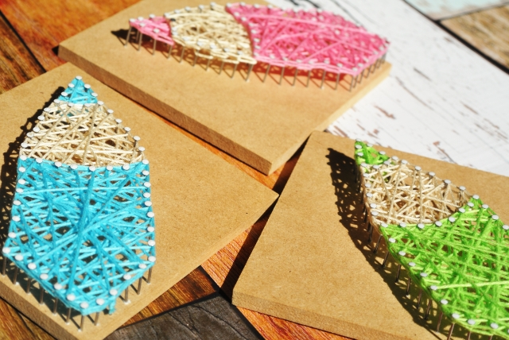

Ryotaのポートフォリオサイト
はじめまして、デザイナー志望の亮太です。
ポートフォリオを見てくださりありがとうございます。
このサイトでは、自分の略歴、デザイナーへの志望理由など掲載しております。
ぜひ目を通していただけると嬉しいです。
自己紹介

間渕亮太
静岡県浜松市出身
生年月日 / 1997年8月5日
Tell / 090-9222-9432
Meal / ryota85aaa@yahoo.co.jp
志望動機

大学時代にプログラミングと出会い、システムを一から作ることに魅力的に感じ、もう一度やりたいという思いが捨て切れず、WEBエンジニア職を志望しました。飲食業の長く携わっていたので、持ち前のコミュニケーション能力でお客様が満足する広告を作りたいと思う所存です。
自己PR
飲食店のホール業務を3年間してきました。働いていた店舗は満席になることが多く、よくお客様の対応で精一杯になっていました。その際、やることが多くて何から手をつけていいかわかなくなってしまい、よくスタッフやお客様に迷惑をかけていました。そこで、仕事中いっぱいいっぱいになったときは一回手を止めて何から手をつけるか段取りを決めてから動くことや、頭の中では慌てているが動きは焦らず落ち着くことを心がけました。それからは、慌ててミスをする事もなくなり、心に余裕ができ、視野が広くなり周りの従業員の手伝いや、お店全体が見えるようになりアクシデントの対応などもできるまで余裕ができました。周りのスタッフの方にも、「間渕さんがいると安心して仕事ができるよ。」と褒めていただき、今までできなかったことが武器に変わった瞬間でした。
貴社に入社後は、社員として責務を持ち、臨機応変に対応することで、成果に貢献していきたいと思います。